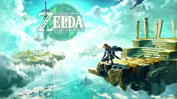

Tears of the Kingdom is a video game in the Legend of Zelda series, a sequel to the game Breath of the Wild.
The story follows a hero of the kingdom of Hyrule by the name of Link. He body guards the Queen of Hyrule, Zelda.
After defeating a 100 year calamity in the previous game lead by a monster by the name of Calamity Ganon Hyrule tries to recover.
However, underneath the castle an evil leaks out making people sick. So the brave Link and Zelda go down into the tunnels to investigate.
When they go down, they find a body in the middle of a huge room. And out of it, is green spiraling energy. The heros move closer.
Until an arm on top of the body falls off, and a stone rolls out. That is where the energy was coming from. Zelda picks the rock up.
The body on the pedistol starts to writhe until it inevitably gives up. As Link and Zelda are confused they move closer.
The body qyuickly sits up and its eyes light up a fiery red. With his raspy voice and decayed body, the thing speaks.
Link pulls out the master sword, also known as the sword that seals the darkness. The monster speaks their names and many other things.
Then the beast shoots out complete malice, Link protects Zelda with the sword. Although, it breaks. The thing, seeming disapointed takes over Links arm.
With Link now weakened, the monster shoots its gloom up and the floor breaks. Zelda falls as the floor falls into the abyss.
Link jumps to save her, but misses. And Zelda vanishes with a bright glow. Then the arm that fell off the mummy grabs Link and pulls him up.
This sets the premise for the game. Link wakes up in a room, and gets out using his broken master sword. And walks out into the Great Sky Islands.

From Devianart